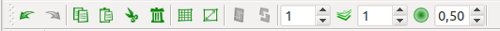
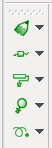
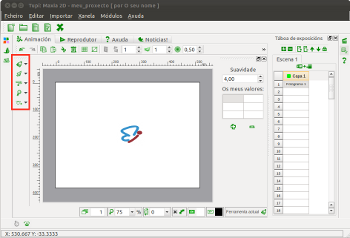
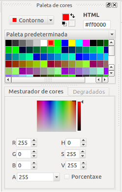
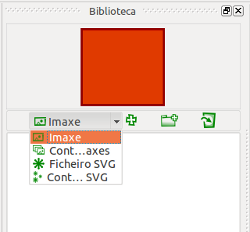
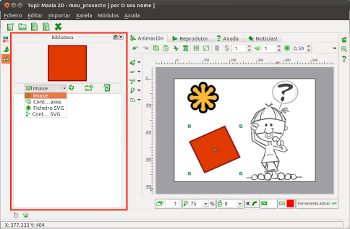
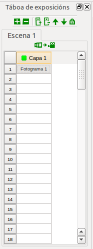
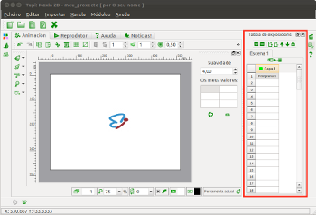

Fig. 14 Menú de Módulos, acceso a Animación
Módulo de animación
É neste módulo no que pasarás a maior parte do tempo cando esteas a traballar con Tupí, sabes por que? aquí é onde constrúes cada fotograma da túa animación e, para seren máis precisos, cada liña de cada personaxe de cada peza do escenario no que queiras contar a túa historia.
Dito noutras palabras se, por exemplo, queres crear a animación dun personaxe camiñando por unha rúa, é nesta lapela onde deberás deseñar ao personaxe e cada unha das posicións nas que este aparecerá mentres se move:
Fig. 13 Interface do módulo de animación
Consello: Cada vez que queiras ver o Módulo de animación, só terás que premer a combinación Ctrl + 1.
Fig. 14 Menú de Módulos, acceso a Animación
Na sección anterior, botámoslle un ollo aos compoñentes máis xerais da interface do Tupí. Vexamos agora, cun pouco máis de detalle, cada un dos recursos
1. Área de traballo
Pensa na área de traballo como un lenzo en branco, o espazo do que dispomos para realizar as ilustracións de cada un dos fotogramas que serán parte da animación. Dispón de dúas regras de guía nos bordos superior e esquerdo. No centro, ten unha forma rectangular de fondo branco que representa as dimensións do fotograma, ou se o prefires, a túa «folla de papel», do lado dereito atoparemos un panel dinámico que conten as propiedades da ferramenta que estea seleccionada nese momento e, na parte inferior, un pequeno grupo de controis relacionados coa área de traballo.
Consello: Aquelo que debuxes fora do fotograma, non será visíbel na animación.
Fig. 15 Área de traballo
2. Panel superior de funcións de edición
Situado na parte superior esquerda, sobre a área de traballo, este panel ofrece todas as funcionalidades básicas de edición habituais á hora de traballar sobre unha ilustración: Desfacer, Refacer, Copiar, Pegar, Cortar, Eliminar, Agrupar e Desagrupar.
Adicionalmente, ofrece dúas opcións complementarias moi útiles: unha Grella de guía para o ilustrador, que pode activarse ou desactivarse a vontade, e o control do Papel cebola,
funcionalidade que permítenos converter o fotograma actual en
semi-transparente, coa fin de poder ver os debuxos que temos tanto en
fotogramas anteriores, como en fotogramas posteriores. Na sección «Vexamos un exemplo» afondaremos no uso desta última opción.
|  |
Fig. 16 Panel superior de funcións de edición
3. Panel de ferramentas
Este panel, situado no bordo esquerdo da área de traballofornécenos todas as ferramentas necesarias para debuxar e realizar
operacións especiais sobre a nosa ilustración. Cada recurso está agrupado segundo a súa natureza nos seguintes sub-menús:
|  |  |
Fig. 17 Panel de ferramentas
4. Barra lateral esquerda
Paleta de cores
Como ben indica o seu
nome, este é o panel onde escollemos a cor coa que queremos trazar,
independente da figura ou forma coa que esteamos a traballar. É
importante ter en conta que mentres non modifiquemos a cor actual,
absolutamente todo o que debuxemos conservará esa mesma cor, ata que
seleccionemos unha diferente.
|  |  |
Fig. 18 Paleta de cores
Consello: Ten presente que ademais de utilizar cores homoxéneas, tamén podes utilizar degradados, é dicir, conxuntos de cores que se mesturan de xeito progresivo sobre unha mesma figura, como no seguinte exemplo, no que o degradado comeza cun verde luminoso e remata en negro:
Fig. 19 Exemplo de degradado
Propiedades da pluma
A pluma
neste contexto, é o tipo de ferramenta que usas para debuxar. Se
queres, podes pensar na pluma como o tipo de punta que lle vas a poñer
ao teu lapis. Este panel permítenos modificar as características da
pluma, como o grosor, o tipo de bordos para os extremos dos trazos e a
continuidade da liña (por exemplo, podes facer trazos punteados, se así
o queres).
 |
 |
Fig. 20 Propiedades da pluma
Biblioteca de obxectos
A función deste
compoñente, é permitirnos almacenar unha copia daquelas figuras ou
imaxes que forman parte do noso proxecto e que nos interesa volver a
utilizar noutros fotogramas da mesma animación ou doutro proxecto. Este
recurso é moi útil en animacións onde sabes que algúns dos elementos
que xa debuxaches van a aparecer unha e outra vez.
|  |  |
Fig. 21 Biblioteca de obxectos
5. Barra lateral dereita
Administrador de escenas
Sabes o que é
unha escena? Tentaremos dar unha definición sinxela: pensa nun filme ou
nun anuncio da TV, fixácheste en que sempre se compoñen de pequenos
fragmentos ordenados de tal xeito que contan unha historia? Estes
fragmentos adoitan seren recoñecidos doadamente polos cambios na
posición da cámara ou el punto de vista do espectador, ou sexa, ti.
Tendo claro este concepto, é doado describir este compoñente: a través
deste panel vamos a poder crear e eliminar cada unha das escenas que
queremos incluír no noso proxecto de animación.
Consello:
É moi importante que antes de comezar co teu proxecto de animación,
teñas moi claro cales son as escenas que vas a desenvolver e en que
orden as vas a crear. Pon moita atención aos consellos da sección «Primeiro o primeiro!».
 |
 |
Fig. 22 Administrador de escenas
Táboa de exposicións
A Táboa de exposicións
é un recurso moi importante no momento de ilustrar cada un dos
«instantes» que forman parte da túa animación. A través dela, podes
engadir ou eliminar novos fotogramas e novas capas a cada unha das túas
escenas. Ademais, desde este panel tes o control para seleccionar os
fotogramas que queiras editar na Área de traballo simplemente premendo nela. Esta funcionalidade sumada á opción de papel cebola do Panel de funcións de edición,
ofreceranche os elementos necesarios para que as túas animacións sexan
fluídas. Isto será moito máis doado de entender, despois de que vexas o
exemplo no Capítulo 2.
|  |  |
Fig. 23 Táboa de exposicións